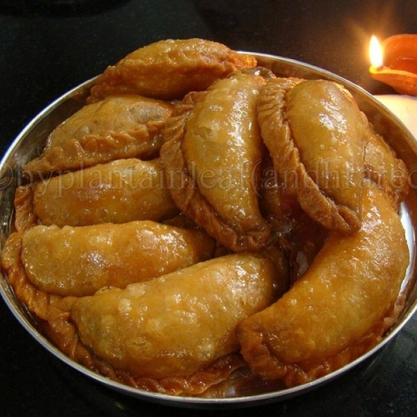
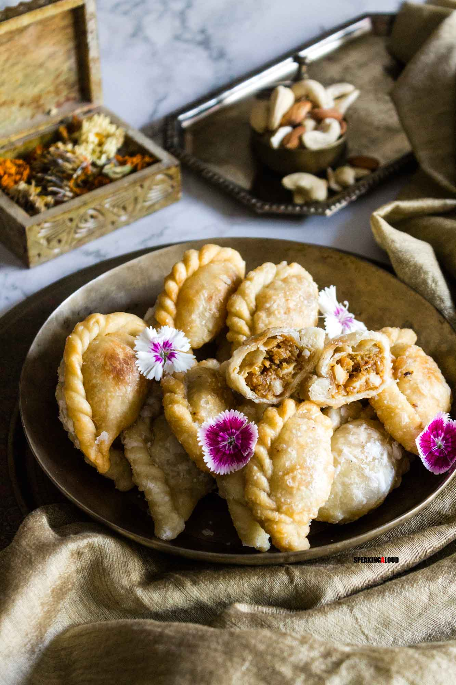

Gujiya is believed to have originated in the 13th century and may have been influenced by Turkish sweet dishes like Baklava, which are also wrapped in a flour cover and stuffed with dry fruits
This sweet dumpling is made using either suji (semolina) or maida (all-purpose flour), which is stuffed with a mixture of sweetened khoa (milk solids or mawa) and dried fruits. It is then deep-fried in ghee to give it a crispy texture
TGujiya, like the samosa, is considered a reflection of India's composite past, as it has traveled from different regions and has been influenced by various cultures